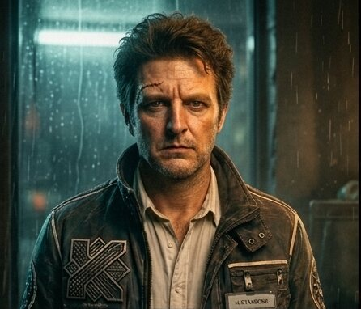

Heritage
Il Torneo Mondiale di Disappunto
Il Kostunbott non nasce in un atelier. Nasce su un palco, davanti a una giuria, durante la competizione più immobile della Galassia Ephemera: il Torneo Mondiale di Disappunto. Vince chi mantiene più a lungo la stessa, identica espressione facciale.
Il campione assoluto si allenò per anni, in silenzio e in solitudine, davanti a uno specchio complice. In finale mantenne un'espressione costante e immutabile per un tempo che nessuno aveva mai nemmeno immaginato. Il premio: il primo Kostunbott.

Il campione, qualche anno dopo. Il sopracciglio non è mai tornato a riposo.
La vittoria ebbe un prezzo. Pochi giorni dopo comparve una paresi: il sopracciglio destro si era sollevato in posizione da gara e nulla riusciva a riportarlo giù. Servì un intervento, suturato alla bell'e meglio da uno specializzando con una lega metallica supersottile destinata alle ossa. Da allora il campione gira con un'espressione perennemente dubbiosa e una placca argentea che nessuna forza dell'ordine riesce a ignorare.
Ma la soddisfazione era stata immensa.
Oggi ogni Kostunbott porta con sé un po' di quel disappunto: dall'emblema sul petto alla toppa sulla schiena. Il testimonial ufficiale è il campione in persona, H. Starborne, detto no-one. Nessuno, appunto.